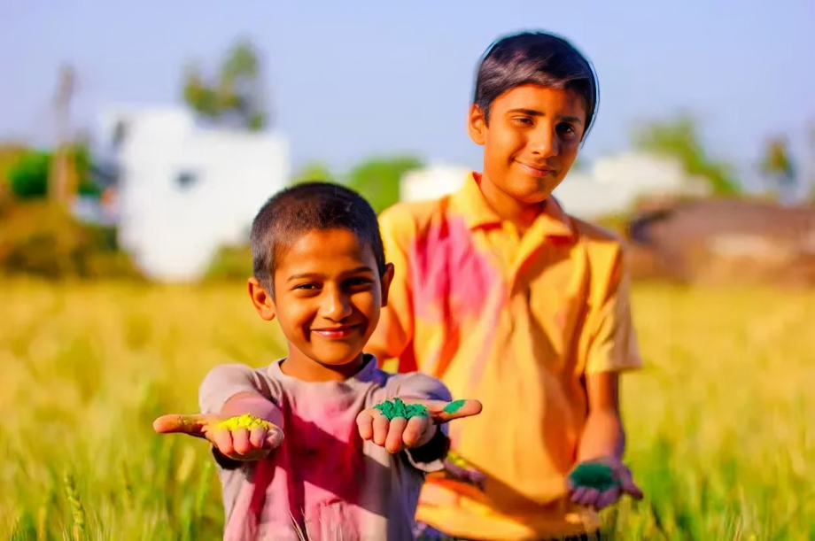

The roots of Holi can be found in several mythological and
historical events, with the most popular legend revolving around the
story of Prahlada and Holika. Prahlada was a devout follower of Lord
Vishnu, but his father, King Hiranyakashipu, was a tyrant who wanted
everyone to worship him as a god. When Prahlada refused to obey his
father's orders, Hiranyakashipu attempted to kill him several times,
but each time Prahlada was saved by divine intervention.
One of the most famous episodes is the tale of Holika, the sister of
Hiranyakashipu, who had a boon that made her immune to fire. The
king asked Holika to sit in a blazing fire with Prahlada on her lap,
thinking that her immunity would protect Prahlada and destroy him.
However, as the fire roared, it was Holika who perished, while
Prahlada emerged unscathed due to his unwavering faith in Lord
Vishnu. This event symbolizes the victory of good over evil, and it
is reenacted during Holi with bonfires known as "Holika Dahan."
Another significant aspect of Holi's historical origins is its
association with various deities, particularly Lord Krishna.
According to Hindu mythology, Krishna, known for his playful and
mischievous nature, used to play Holi with his friends in the
village of Vrindavan. The most famous story is about Krishna and
Radha, where Krishna would play pranks on Radha and her friends by
drenching them in colored water and smearing them with vibrant
powders. This playful aspect of Holi is deeply ingrained in the
festival's traditions, with people of all ages joining in the fun
and revelry.
The festival of Holi also has agricultural significance, as it marks
the end of winter and the beginning of the spring harvest season.
Farmers celebrate Holi by offering prayers for a bountiful harvest
and seeking blessings from the gods for prosperity and abundance.
The colors used during Holi are often made from natural ingredients
like flowers, herbs, and spices, further connecting the festival to
nature and the earth's cycles.

Over time, Holi has transcended its religious and cultural origins
to become a symbol of unity, friendship, and inclusivity. It is
celebrated by people of all backgrounds and beliefs, bringing
communities together in a spirit of joy and camaraderie. The
festival is characterized by vibrant colors, music, dance, and
delicious food, creating an atmosphere of festive fervor and
happiness.
In addition to its traditional aspects, modern Holi celebrations
often include musical events, dance performances, and cultural
activities. People come together to sing traditional Holi songs,
known as "Holi ke Rang," and engage in lively dance routines like
the energetic "dandiya raas" or the graceful "garba."
Holi has also gained popularity beyond India, with people around the
world embracing the colorful festivities and participating in community
events. In countries like Nepal, Bangladesh, Pakistan, and parts of
Southeast Asia, Holi is celebrated with enthusiasm, albeit with
variations in customs and rituals based on local traditions.
Overall, the historical origins of Holi are deeply rooted in mythology,
culture, and spirituality. It is a time of renewal, joy, and
togetherness, where people come together to celebrate life and the
beauty of diversity. Through its rich history and vibrant celebrations,
Holi continues to be a cherished festival that brings people closer and
spreads love and happiness wherever it is celebrated.